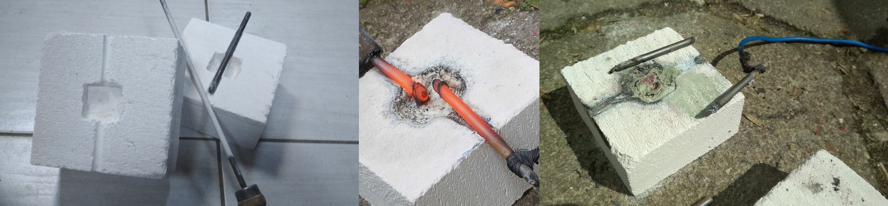
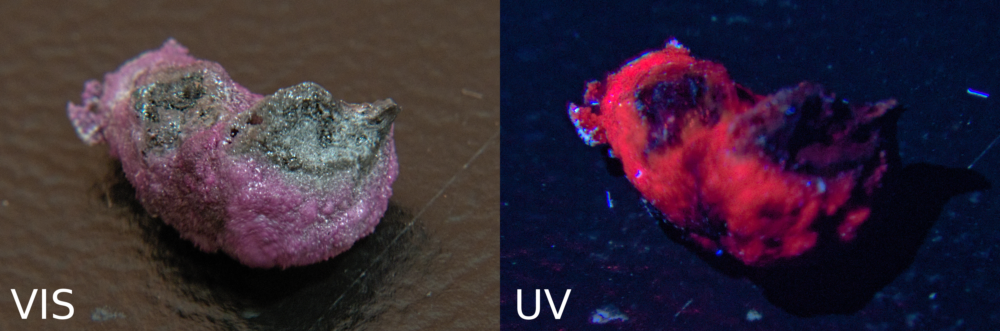

Our first try on making ruby was a success. We managed to build an electric arc furnace using sand lime brick and graphite rods. Electrodes were made out of thick pencil leads which were contaminated with wax and had to be annealed to prevent them from exploding (yes, it happened). The furnace chamber was carved in the brick to make place for material and electrodes. Reagents used to fuse ruby were aluminum oxide (III) and chromium oxide (III). Ingredients were then crushed to fine powder and thoroughly mixed in ratio of 80:1. Then the mixture was put into furnace chamber and heated with electric arc to temperatures above 4000°C.
Unfortunately the length of electrodes wasn’t sufficient for preventing the wires and other apparatus to degrade due to intense heat. The electrodes themselves started to degrade quickly due to air exposure and insufficient cooling. This resulted in relative short heating time but nevertheless still effective enough to produce a ruby. The newly made crystals were black at first and turned pink while cooling, showing a strong thermochromic effect. They had a fine crystalline structure which is consequence of short time of heat exposure. Biggest crystal clusters had size of roughly 10mm and displayed a strong fluorescent effect. The gray-black spots are parts of melted electrode.
After taking a sample under microscope we observed that color of ruby is uniform which shows that mixture was well mixed. Pale pink shade tells us that there is too much chromium oxide. Lower quantities of chromium will produce darker crystals. In our next test we will improve on whole process and see how chromium content impacts fluorescence. Picture below presents produced shards under microscope in magnifications of 60x for F.1, 150x for F.2 and 300x for F.3.4.5. The visible white spots on F.1, F.2 are calcinated aluminum oxide in form of compressed powder. On pictures F.4 and F.5 we can see crystals of crushed ruby. We can assume that its internal structure is not monocrystalic but is not porous which is extremely important in any later use of produced crystals. The most interesting find is that shown on F.3. The yellow monocrystal in the center is… Diamond! A very small one, about 10μm. It was created due to degradation of graphite electrodes and local pressure increase.